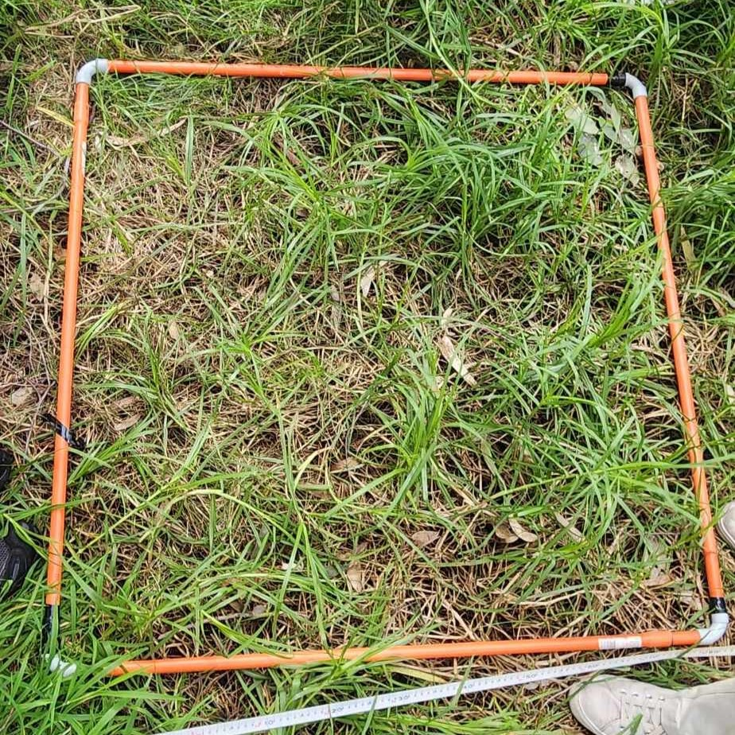

- Vegetation survey: used sampling techniques to assess the vegetation in the Jock Marshall Reserve. This involved recognising native and invasive species in 1m2 quadrats. Quadrats were spaced 5m apart across transects.
- Habitat hectares assessment: assessed various vegetation categories outlined by Victorian Energy, Environment and Climate Action (2004) and compare this to a benchmark value outlined for the particular EVC in order to determine quality of vegetation. This method accounts for variation between assessors.

An example quadrat from the vegetation survey